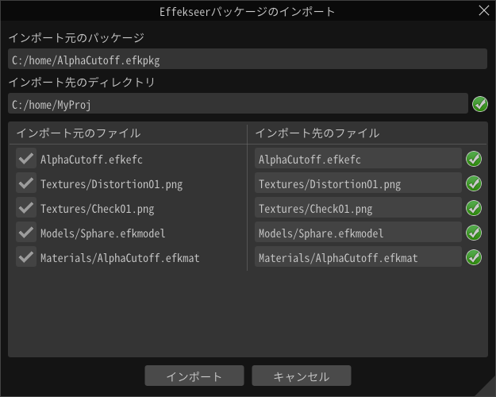

ファイル - インポート¶
Effekseerパッケージ¶
efkpkgファイルをインポートします。
efkpkgファイルは1つ以上のefkefcファイルと、各種リソースファイルが含まれたパッケージファイルです。
インポートするファイルを指定すると、インポートダイアログが表示されます。
このダイアログでは以下の操作を行うことができます。
インポート先のディレクトリの変更
初期状態では現在開いているエフェクトのディレクトリが指定されています。
ファイル単位のインポートを行うかどうかの選択
ファイル名の左のチェックを外すと、そのファイルはインポートが行われません。
インポート先に既にファイルがあるときは警告アイコンが表示されます。
インポートする各ファイル名の変更
ファイル名変更すると、そのファイルを参照しているファイル内の参照名も書き換えられます。
簡単にパスを変更するための機能があります。
同じファイルの結合
上書きの回避
ルートディレクトリの追加
問題なければインポートボタンを押すと、efkpkg内のファイルがインポート先へ展開されます。